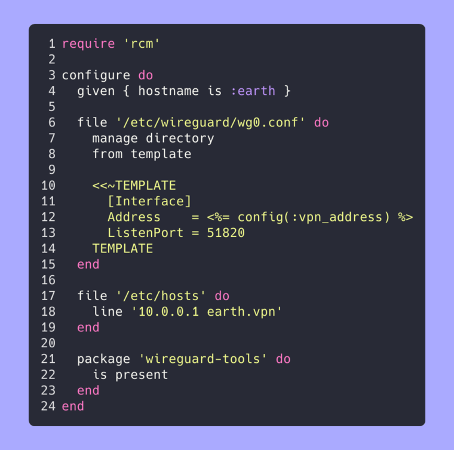

RCM: The Ruby Configuration Management DSL
Published at 2026-03-02T00:00:00+02:00
RCM is a tiny configuration management system written in Ruby. It gives me a small DSL for describing how I want my machines to look, then it applies the changes: create files and directories, manage packages, and make sure certain lines exist in configuration files. It's deliberately KISS and optimised for a single person's machines instead of a whole fleet.

Table of Contents
Why I built RCM
I've used (and still use) the usual suspects in configuration management: Puppet, Chef, Ansible, etc. They are powerful, but also come with orchestration layers, agents, inventories, and a lot of moving parts. For my personal machines I wanted something smaller: one Ruby process, one configuration file, a few resource types, and good enough safety features.
I've always been a fan of Ruby's metaprogramming features, and this project let me explore them in a focused, practical way.
Because of that metaprogramming support, Ruby is a great fit for DSLs. You can get very close to natural language without inventing a brand-new syntax. RCM leans into that: the goal is to read a configuration and understand what happens without jumping between multiple files or templating languages.
RCM repo on Codeberg
How the DSL feels
An RCM configuration starts with a configure block. Inside it you declare resources (file, package, given, notify, …). RCM figures out dependencies between resources and runs them in the right order.
configure do
given { hostname is :earth }
file '/tmp/test/wg0.conf' do
requires '/etc/hosts.test'
manage directory
from template
'content with <%= 1 + 2 %>'
end
file '/etc/hosts.test' do
line '192.168.1.101 earth'
end
end
The idea is that you describe the desired state and RCM worries about the steps. The given block can short‑circuit the whole run (for example, only run on a specific hostname). Each file resource can either manage a complete file (from a template) or just make sure individual lines are present.
Keywords and resources
Under the hood, each DSL word is either a keyword or a resource:
- Keyword is the base class for all top‑level DSL constructs.
- Resource is the base class for things RCM can manage (files, packages, and so on).
Resources can declare dependencies with requires. Before a resource runs, RCM makes sure all its requirements are satisfied and only evaluates each resource once per run. This keeps the mental model simple even when you compose more complex configurations.
Files, directories, and templates
The file resource handles three common cases:
- Managing parent directories (manage directory) so you don't have to create them manually.
- Rendering ERB templates (from template) so you can mix Ruby expressions into config files.
- Ensuring individual lines exist (line) for the many "append this line if missing" situations.
Every write operation creates a backup copy in .rcmbackup/, so you can always inspect what changed and roll back manually if needed.
The nice thing about RCM is that the Ruby code you write in your configuration is not that different from the Ruby code inside RCM itself. The DSL is just a thin layer on top.
For example, when you write:
file '/etc/hosts.test' do
line '192.168.1.101 earth'
end
Ruby turns file into a method call and '/etc/hosts.test' into a normal argument. Inside RCM, that method builds a File resource object and stores it for later. The block you pass is just a Ruby block; RCM calls it with the file resource as self, so method calls like line configure that resource. There is no special parser here, just plain Ruby method and block dispatch.
The same goes for constructs like:
given { hostname is :earth }
RCM uses Ruby's dynamic method lookup to interpret hostname and is in that block and to decide whether the rest of the configuration should run at all. Features like method_missing, blocks, and the ability to change what self means in a block make this kind of DSL possible with very little code. You still get all the power of Ruby (conditionals, loops, helper methods), but the surface reads like a small language of its own.
A bit more about method_missing
method_missing is one of the key tools that make the RCM DSL feel natural. In plain Ruby, if you call a method that does not exist, you get a NoMethodError. But before Ruby raises that error, it checks whether the object implements method_missing. If it does, Ruby calls that instead and lets the object decide what to do.
In RCM, you can write things like:
given { hostname is :earth }
Inside that block, calls such as hostname and is don't map to normal Ruby methods. Instead, RCM's DSL objects see those calls in method_missing, and interpret them as "check the current hostname" and "compare it to this symbol". This lets the DSL stay small and flexible: adding a new keyword can be as simple as handling another case in method_missing, without changing the Ruby syntax at all.
Put differently: you can write what looks like a tiny English sentence (hostname is :earth) and Ruby breaks it into method calls (hostname, then is) that RCM can interpret dynamically. Those "barewords" are not special syntax; they are just regular Ruby method names that the DSL catches and turns into configuration logic at runtime.
Here's a simplified sketch of how such a condition object could look in Ruby:
class HostCondition
def initialize
@current_hostname = Socket.gethostname.to_sym
end
def method_missing(name, *args, &)
case name
when :hostname
@left = @current_hostname
self # allow chaining: hostname is :earth
when :is
@left == args.first
else
super
end
end
end
HostCondition.new.hostname.is(:earth)
RCM's real code is more sophisticated, but the idea is the same: Ruby happily calls method_missing for unknown methods like hostname and is, and the DSL turns those calls into a value (true/false) that decides whether the rest of the configuration should run.
If you want to dive deeper into the ideas behind RCM's DSL, these books are great starting points:
- "Metaprogramming Ruby 2" by Paolo Perrotta
- "The Well-Grounded Rubyist" by David A. Black (and others)
- "Eloquent Ruby" by Russ Olsen
They all cover Ruby's object model, blocks, method_missing, and other metaprogramming techniques in much more detail than I can in a single blog post.
Safety, dry runs, and debugging
RCM has a --dry mode: it logs what it would do without actually touching the file system. I use this when iterating on new configurations or refactoring existing ones. Combined with the built‑in logging and debug output, it's straightforward to see which resources were scheduled and in which order.
Because RCM is just Ruby, there's no separate agent protocol or daemon. The same process parses the DSL, resolves dependencies, and performs the actions. If something goes wrong, you can drop into the code, add a quick debug statement, and re‑run your configuration.
RCM does not try to compete with Puppet, Chef, or Ansible on scale. Those tools shine when you manage hundreds or thousands of machines, have multiple teams contributing modules, and need centralised orchestration, reporting, and role‑based access control. They also come with their own DSLs, servers/agents, certificate handling, and a long list of resource types and modules. Ansible may be more similar to RCM than the other tools, but it's still much more complex than RCM.
For my personal use cases, that layer is mostly overhead. I want:
- No extra daemon, message bus, or master node.
- No separate DSL to learn besides Ruby itself.
- A codebase small enough that I can understand and change all of it in an evening.
- Behaviour I can inspect just by reading the Ruby code.
In that space RCM wins: it is small, transparent, and tuned for one person (me!) with a handful of personal machines or my Laptops. I still think tools like Puppet are the right choice for larger organisations and shared infrastructure, but RCM gives me a tiny, focused alternative for my own systems.
Cutting RCM 0.1.0
As of this post I'm tagging and releasing **RCM 0.1.0**. About 99% of the code has been written by me so far, and before AI agents take over more of the boilerplate and wiring work, it felt like a good moment to cut a release and mark this mostly‑human baseline.
Future changes will very likely involve more automated help (including agents like the one you're reading this in), but 0.1.0 is the snapshot of the original, hand‑crafted version of the tool.
What's next
RCM already does what I need on my machines, but there are a few ideas I want to explore:
- More resource types (for example, services and users) while keeping the core small.
- Additional package backends beyond Fedora/DNF (in particular MacOS brew).
- Managing hosts remotely.
- A slightly more structured way to organise larger configurations without losing the KISS spirit.
Feature overview (selected)
Here is a quick overview of what RCM can do today, grouped by area:
- File management: file '/path', manage directory, from template, line '...'
- Packages: package 'name' resources for installing and updating packages (currently focused on Fedora/DNF)
- Conditions and flow: given { ... } blocks, predicates such as hostname is :earth
- Notifications and dependencies: requires between resources, notify for follow‑up actions
- Safety and execution modes: backups in .rcmbackup/, --dry runs, debug logging
Some small examples adapted from RCM's own tests:
Template rendering into a file:
configure do
file './.file_example.rcmtmp' do
from template
'One plus two is <%= 1 + 2 %>!'
end
end
Ensuring a line is absent from a file:
configure do
file './.file_example.rcmtmp' do
line 'Whats up?'
is absent
end
end
Keeping a backup of the original content when a file changes:
configure do
file original do
path './.dir_example.rcmtmp/foo/backup-me.txt'
manage directory
'original_content'
end
file new do
path './.dir_example.rcmtmp/foo/backup-me.txt'
manage directory
requires file original
'new_content'
end
end
Guarding a configuration run on the current hostname:
configure do
given { hostname Socket.gethostname }
end
Creating and deleting directories, and purging a directory tree:
configure do
directory './.directory_example.rcmtmp' do
is present
end
directory delete do
path './.directory_example.rcmtmp'
is absent
end
end
Managing file and directory modes and ownership:
configure do
touch './.mode_example.rcmtmp' do
mode 0o600
end
directory './.mode_example_dir.rcmtmp' do
mode 0o705
end
end
Using a chained, more natural language style for notifications:
configure do
notify hello dear world do
thank you to be part of you
end
end
Touching files and updating their timestamps:
configure do
touch './.touch_example.rcmtmp'
end
Expressing dependencies between notifications:
configure do
notify foo do
requires notify bar and requires notify baz
'foo_message'
end
notify bar
notify baz do
requires notify bar
'baz_message'
end
end
Creating and updating symbolic links:
configure do
symlink './.symlink_example.rcmtmp' do
manage directory
'./.symlink_target_example.rcmtmp'
end
end
Detecting duplicate resource definitions at configure time:
configure do
notify :foo
notify :foo # raises RCM::DSL::DuplicateResource
end
If you find RCM interesting, feel free to browse the code, adapt it to your own setup, or just steal ideas for your own Ruby DSLs. I will probably extend it with more features over time as my own needs evolve.
E-Mail your comments to paul@nospam.buetow.org :-)
Other related posts:
2026-03-02 RCM: The Ruby Configuration Management DSL (You are currently reading this)
2025-10-11 Key Takeaways from The Well-Grounded Rubyist
2021-07-04 The Well-Grounded Rubyist
2016-04-09 Jails and ZFS with Puppet on FreeBSD
Back to the main site